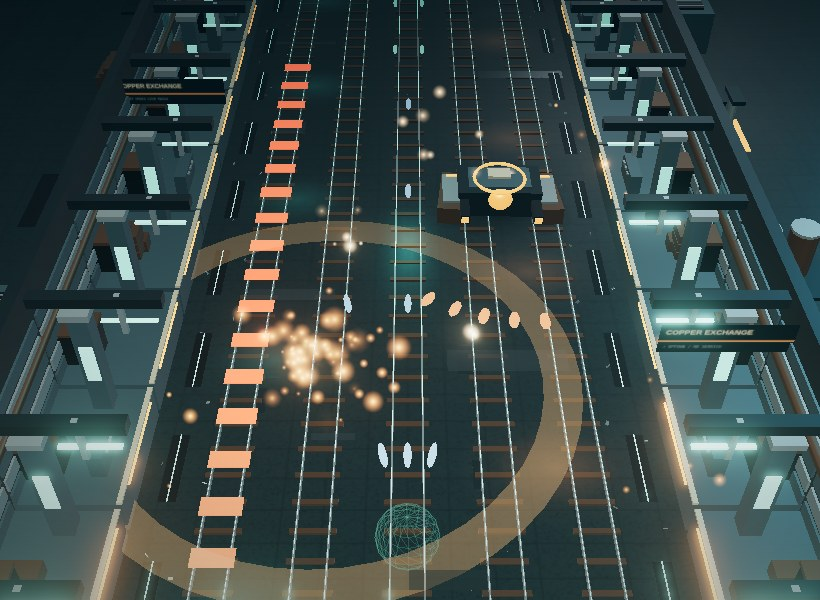

NEW / THREE.JS 3D / v3.1.0THE FULL 3D REBUILDIRONLINE
Armoured drones, live rails and a city that wants you gone. Five changing sectors, evolving bosses and a different loadout every run.
DEPLOY INTO IRONLINE ↗🌐 IRONLINE / GLOBAL TOP 5
Connecting…